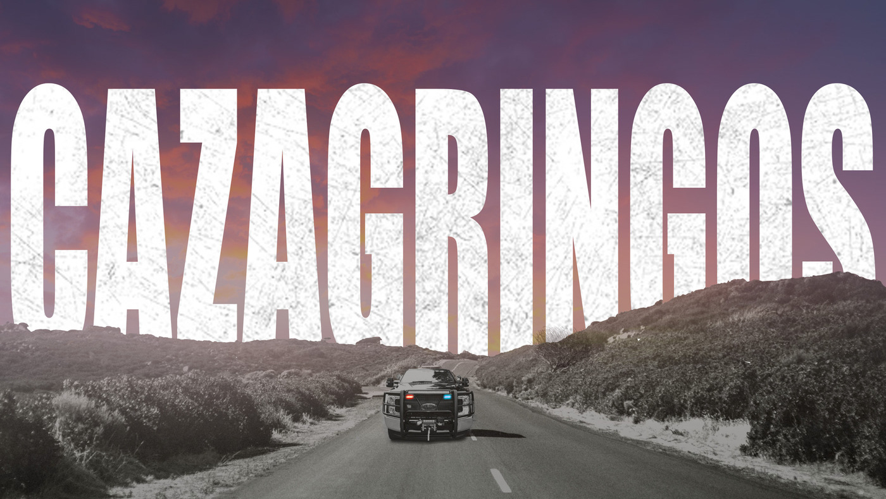

Los Mas Destacados
El Podcast No.1 de Terror
Escucha: Historias paranormales, casos famosos e inquietantes incluso del fenomeno no humano y mucho mas...

Historias de crímenes y persecución en México
En México existe un grupo policial dedicado a buscar criminales que cruzan la frontera huyendo de Estados Unidos, conocidos popularmente como 'Los Cazagringos'.